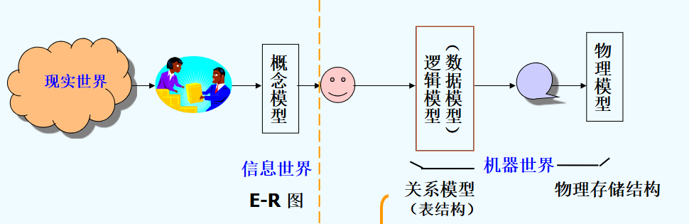
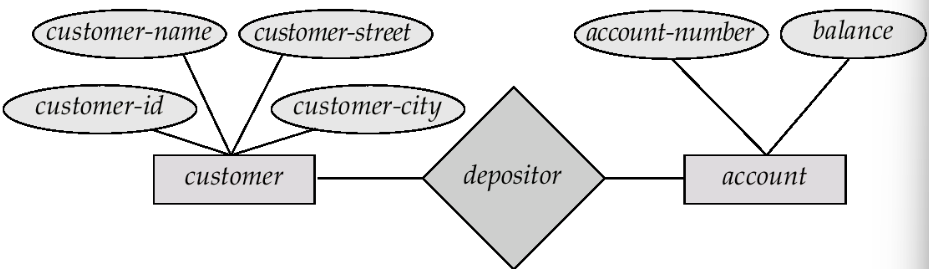

数据库介绍
数据库: 一个相互关联的, 用于对现实世界问题建模的有组织的数据集合
数据库管理系统(DBMS): 一种允许应用存储和分析数据库信息的软件
1.5 Data Models 数据模型
数据模型是用于描述的概念工具的集合
数据库设计步骤:

(1) Entity Relationship Model 实体-联系模型
E-R model:
- Entities(实体): 由属性(attributes)描述
- Relationships between entities

(2) Relational Model 关系模型
将E-R diagrams 转换为关系模式
一组用于表示数据与数据之间的关系的表格

1.6 Database Language
DDL 数据定义语言: Data Definition Language
- 定义 database scheme, 即定义一组 relational schema
- 同时定义了存储结构, 访问方法 以及 一致性约束
- DDL 语句会被编译, 生成一组存储在特殊文件中的表: data dictionary(数据字典)
DML 数据操纵语言 Data Manipulation Language
允许用户访问和操纵那些被合适的数据模型组织过的数据, 包括检索(retrieve), 插入(insert) / 删除(delete) / 更新(update)操纵
- 过程型(procedural): 用户指明所需数据以及获取数据的方法
- 声明型/非过程型(nonprocedural): 用户只需要知名数据
DCL 数据控制语言 Data Control Language: 用于安全,访问控制
1.6.1 SQL
SQL = DDL + DML + DCL
SQL(structured query language) 结构化查询语言: 使用最广泛的查询语言
- 一种非过程查询语言, 将一张或多张表格作为输入, 输出一张表格
1.6.2 Database Access from Application Programs
像 SQL 这样的非过程型查询语言并不具备与通用图灵机一样强大的能力，因为它无法进行一般编程语言能够做到的计算，也不支持用户输入、输出显示和网络通信等行为。因此这样的计算和行为必须用宿主语言(host language) 编写（比如 C/C++、Java、Python 等），并依靠嵌入式的 SQL 查询来访问数据库内的数据。应用程序(application program) 就是通过这种方式来和数据库交互的程序。

1.7 Database Users
不同的用户接口类型对应以下不同类型的用户：
- 普通 (naive) 用户：通过预先定义的用户接口（比如 web 或移动应用）与数据库系统交互
- 应用程序员：编写应用程序，通过多种工具开发用户接口
- 富有经验的用户：并不通过编写程序与系统交互，而是使用数据库查询语言，或者使用数据分析软件等工具来构建请求
- 数据库管理员(database administrator, DBA)：具备对数据库和程序的中央控制权的特殊用户。
- DBA 具备该数据库的最高特权
- DBA 需要协调好数据库系统的所有活动
- DBA 控制数据库所有用户的权限 (authority)
- DBA 需要对企业信息资源和需求有较好的了解
- DBA 的责任：
- 模式、存储结构和访问方法的定义
- 模式和物理组织的调整
- 对数据访问的授权
- 日常维护：监控性能、响应要求的改变、数据库的安全（周期性备份 (backup) 数据库、故障时恢复）、留够硬盘空间
1.8 事务管理
事务(transaction)：用于在数据库应用中执行单个逻辑功能的一组操作
事务的要求,ACID：原子性(atomicity)、一致性(consistency)、隔离性(isolation)、持久性(durability)
事务管理组件的组成部分：
- 恢复管理器(recovery manager)：通过备份或恢复子系统，来确保数据库在系统或事务故障时，能够保持数据库的一致（正确）状态
- 并发控制管理器(concurrency-control manager) 用于控制并发事务之间的互动
1.9 数据库管理系统结构
存储管理器(storage manager)：为存储在数据库的底层数据、应用程序和提交到系统的查询之间提供接口
- 需要与文件系统打交道，将各种 DML 语句翻译为底层的文件系统命令，并负责存储、检索和更新数据库内的数据
- 组成部分：
- 授权和完整性管理器(authorization and integrity manager)
- 事务管理器(transaction manager)：维护一致性和并发事务执行
- 文件管理器(file manager)：管理硬盘存储空间分配
- 缓冲区管理器(buffer manager)：将数据从硬盘拿到主存中，并决定将哪些数据放在缓存中
查询处理器(query processor)：包括以下组成部分
- DDL 解释器(interpreter)：解释 DDL 语句，并将定义记录在数据字典中
- DML 编译器(compiler)：将用查询语言表述的 DML 语句翻译为由底层指令构成的评估计划 (evaluation plan)，此外还支持查询优化（选择成本最低的评估计划）
- 查询评估引擎(query evaluation engine)：执行由 DML 编译器生成的底层指令